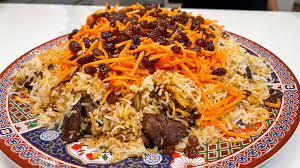

Qabeli-palaw-recipe(luxurious Afghan dish)
this is the recipe for cooking qabeli
Instructions
- wash the rice and and soak it in a warm water
- boil water and a pot and then cook the rice for 5-10 minutes
- cut the meat and slice some onions then mix it and add some salt and pepper
- slice the carrots and potatoes , cook the potatoes within a pot with some oil
- layer the rice , then meat than meat and potato , sprinke the carrots on top
- finally cover the pot and steam it for 20-30 minutes .
